PARTE DELANTERA
PANEL DELANTERO
DESCRIPCIÓN GENERAL
El panel delantero está unido al paso de rueda delantera y al larguero delantero. Forma la base de los faros y de otros componentes y mantiene la rigidez de la sección delantera de la carrocería. Preste especial atención al alabeo y al paralelismo y verifique el montaje cuando vaya a soldarlo.
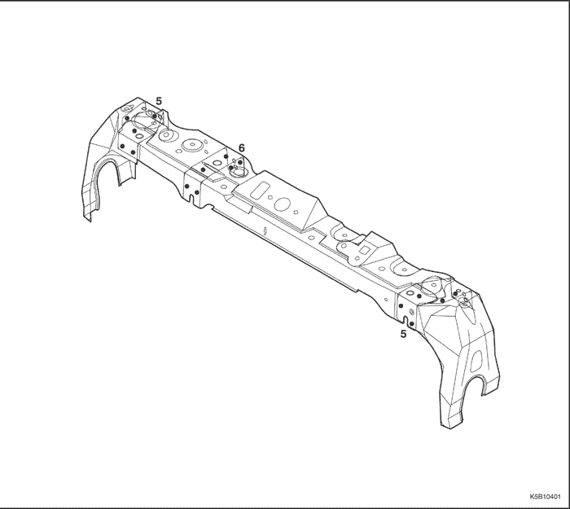


PROCEDIMIENTO DE REPARACIÓN
- Desmonte los componentes asociados.
- Capó y parachoques delantero
- Faros y guardabarros.
- Motor, radiador y componentes asociados.
- Condensador del A/A y componentes asociados.
- Otros.
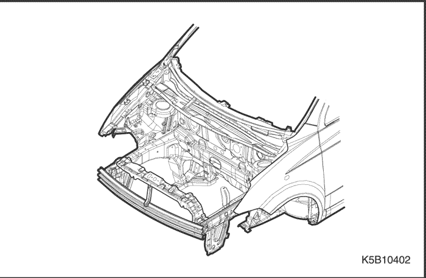
- Desabolle y enderece la zona dañada.
- Compruebe el daño del paso de rueda delantera y del larguero delantero antes de desmontar el panel delantero. Coloque el coche en una bancada para desabollar y reparar la zona dañada del panel delantero antes de desmontarlo.
Nota: Compruebe el ajuste de la puerta, teniendo cuidado de no desabollar más de lo necesario.
- Utilice las mordazas de sujeción horizontal soldadas y sujete firmemente el coche a la bancada por los puntos de sujeción.
- Mantenga la carrocería nivelada.
- Levante la carrocería con un gato, y coloque polines de seguridad en los cuatro puntos del vano de puertas del bastidor, destinados a tal efecto.
- Corte el panel frontal y extráigalo.
- Granetee la zona alrededor de los puntos de soldadura.
- Utilice una fresa especial cortapuntos para taladrar los puntos de soldadura en el paso de rueda y el larguero delanteros.
Nota: Cuando esté taladrando, tenga cuidado de no perforar el paso de rueda ni el larguero delanteros.
- Corte el panel delantero con un cincel neumático, dejando intactas las pestañas para soldar.
- Rebaje y dele acabado a las rebabas de la soldadura por puntos con una lijadora de disco.
Precaución: Utilice gafas de protección abiertas o cerradas siempre que vaya a lijar, cortar o esmerilar para evitar lesiones en los ojos.
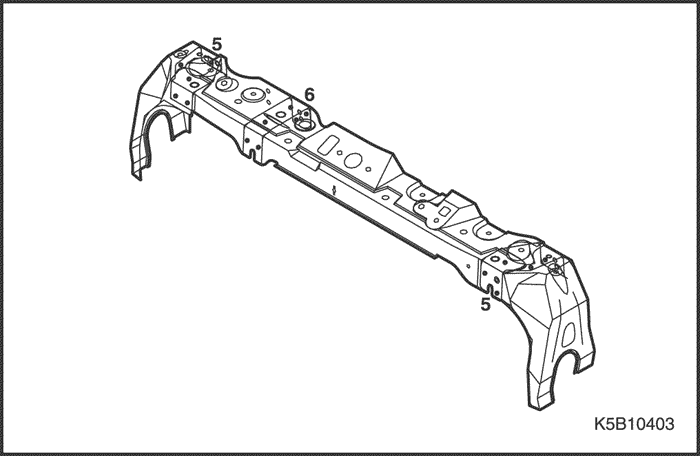
- Enderece los componentes asociados que se hayan abollado.
- Utilice un martillo y un tas para enderezar las zonas dañadas en el paso de rueda y el larguero delanteros.
- Empareje las pestañas para soldar, con martillo y tas.
- Rellene con soldadura cualquier orificio que se haya hecho al quitar la soldadura por puntos.
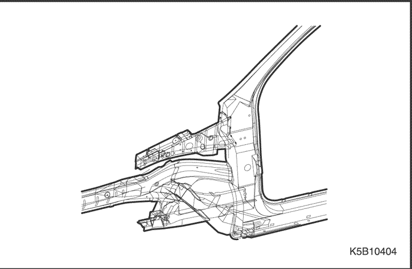
- Coloque el panel delantero.
- Lije ambos lados de la sección a soldar del panel delantero, con una lijadora, para quitarle la pintura y dejar expuesta la chapa de acero.
Precaución: Utilice gafas de protección abiertas o cerradas siempre que vaya a lijar, cortar o esmerilar para evitar lesiones en los ojos.
- Sujete firmemente los lados derecho e izquierdo con mordazas de presión como se muestra en la figura.
- Suelde las secciones sujetas con mordazas de presión para su montaje provisional.
Precaución: Para evitar lesiones en los ojos y quemaduras cuando esté soldando, utilice una careta para soldar, guantes y zapatos de seguridad homologados.
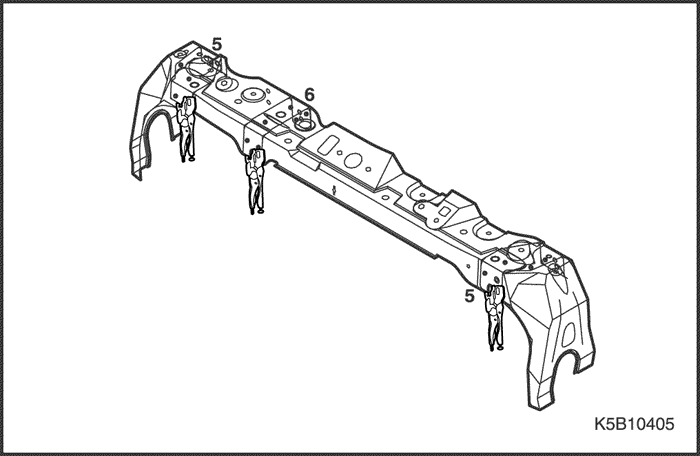
Nota: Asegúrese de que los paneles delanteros derecho e izquierdo estén alineados uno con respecto al otro.
- Mida diagonalmente el compartimento delantero.
- Mida diagonalmente el compartimento delantero con un compás de vara de alineación o una cinta métrica, como se muestra en la figura, para comprobar si este compartimento está torcido o curvado.
- Monte provisionalmente el guardabarro, los faros y el capó, y luego verifique las holguras y las diferencias de nivel.
- Aplique la soldadura principal.
- Suelde por puntos el panel delantero, como se muestra en la figura.
Precaución: Para evitar lesiones en los ojos y quemaduras cuando esté soldando, utilice una careta para soldar, guantes y zapatos de seguridad homologados.
- Haga primero una soldadura de prueba y verifique la calidad de la misma.
- Aumente el número de puntos de soldadura en un 20 % en las zonas que vayan a ser soldadas por puntos.
- Dele acabado a las zonas soldadas.
- Utilice un martillo y un tas para enderezar el paso de rueda delantera y las pestañas del larguero con el fin de que ajusten bien con la superficie del panel delantero.
- Aplique la capa de imprimación.
- Aplique una capa de imprimación a las zonas dañadas del paso de rueda delantera y al larguero si fuera necesario.
- Aplique la pintura.
- CUIDADO:
- Ventile bien el local cuando esté pintando. La mayoría de las pinturas contienen sustancias que resultan nocivas si se inhalan o ingieren. Lea detenidamente la etiqueta de la lata de pintura antes de abrirla.
- Evite el contacto con la piel. Cuando vaya a pintar, utilice máscara, guantes y gafas homologadas para este trabajo, así como ropas adecuadas.
- La pintura es inflamable. Almacénela en un lugar seguro y manténgala alejada de chispas, llamas y cigarrillos.
- Aplicación de agentes anticorrosivos.
- Aplique una capa de agentes anticorrosivos hasta el extremo del lateral del panel delantero y las zonas de las bisagras de la puerta.
- Monte los componentes asociados.
- Motor, radiador y componentes asociados.
- Condensador del A/A y componentes asociados.
- Faros y guardabarros.
- Capó, rejilla del radiador y parachoques.
- Otros
- Móntelos en la misma secuencia en que los desmontó, pero en orden inverso.
Nota: Después de montar todos los componentes asociados, engrase los componentes móviles y rellene el depósito de refrigerante del motor, el del líquido de freno, el del gas del A/A y demás.
- Compruebe y ajuste
- Holguras y diferencias de nivel.
- Funcionamiento del mecanismo de cierre y apertura del capó.
- El reglaje de los faros.
- El funcionamiento de todos los otros componentes asociados.
- Si hay fugas de gas, aceite o líquido.
Nota: Utilice la hoja de comprobación que se especifica para la comprobación del funcionamiento.
PASO DE RUEDA DELANTERA
DESCRIPCIÓN GENERAL
El componente del paso de rueda delantera forma una unidad con el amortiguador localizador. Por lo tanto, la sustitución del componente afecta repercute en la alineación de las ruedas delanteras. Cuando vaya a montarlo, utilice una plantilla o ajústese a las dimensiones que aparecen en el gráfico de reparación de la carrocería, para colocarlo en su posición correcta. Debe soldarse con cuidado.
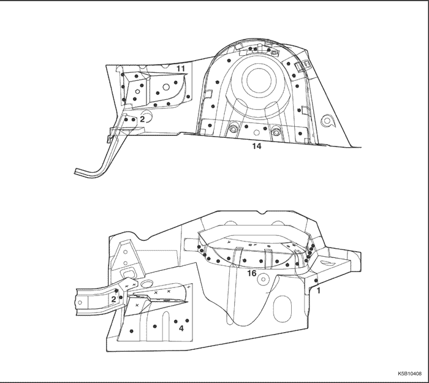
PROCEDIMIENTO DE REPARACIÓN
- Desmonte los componentes asociados.
- Componentes ubicados en la parte inferior del salpicadero correspondiente al pasajero, que son especialmente inflamables.
- Panel de instrumentos, cableado, componentes asociados y otros.
- Desabolle y enderece la zona dañada hasta devolverle aproximadamente su forma original.
- Sujete bien el coche a la bancada apretando las abrazaderas de los bajos de la carrocería en los puntos de sujeción horizontal soldados.
- Antes de cortar las secciones dañadas, desabóllelas para devolverles su forma original.
- No desabolle más de lo necesario.
- Desabolle y enderece las zonas dañadas del paso de rueda trasera, la parte inferior del salpicadero, el montante delantero y otros componentes.
Nota: Compruebe el estado de la puerta y las bisagras.
- Desmonte el refuerzo del paso de ruedas.
- Granetee la zona alrededor de los puntos de soldadura.
- Utilice la fresa especial cortapuntos para taladrar los puntos de soldadura del refuerzo del paso de rueda.
- Lije la soldadura MIG, con una lijadora de disco.
Precaución: Utilice gafas de protección abiertas o cerradas siempre que vaya a lijar, cortar o esmerilar para evitar lesiones en los ojos.
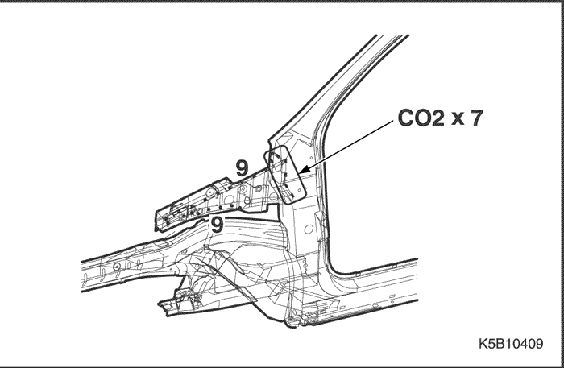
- Utilizando un cortafrío, separe la pestaña soldada del montante y del paso de rueda delanteros.
- Quite la capa de imprimación y el sellador.
- Caliente la capa de imprimación y el sellador, con un soplete de gas, en las zonas soldadas del paso de rueda y del larguero, y levante la capa de imprimación y el sellador con una espátula de acero.
- Corte y extraiga el paso de rueda delantera.
- Granetee la zona alrededor de los puntos de soldadura en el larguero y el paso de rueda trasera.
- Utilice la fresa especial cortapuntos para taladrar los puntos de soldadura en el centro de las zonas graneteadas.
- Corte el paso de rueda delantera con un cincel neumático, dejando intactas las pestañas para soldar.
- Rebaje y dele acabado a las rebabas de la soldadura por puntos con una lijadora de disco.
Precaución: Utilice gafas de protección abiertas o cerradas siempre que vaya a lijar, cortar o esmerilar para evitar lesiones en los ojos.
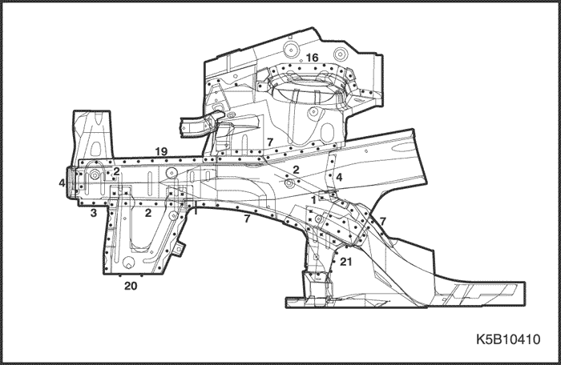
- NOTA:
- Si el daño se ha producido solamente en el lateral delantero, corte la sección dañada del paso de rueda delantera, recorte el panel nuevo para que ajuste en la sección del panel viejo que se va a seguir usando, y suelde a tope ambas
- Enderece los componentes asociados que se hayan abollado.
- Rellene con soldadura cualquier orificio que se haya hecho al quitar la soldadura por puntos.
- Utilice un martillo y un tas para enderezar las zonas dañadas en el larguero delantero, el paso de rueda delantera y otros paneles.
- Empareje las pestañas para soldar, con martillo y tas.
- Coloque el nuevo panel del paso de rueda delantera.
- Utilice una lijadora para lijar ambos lados de la sección a soldar de los pasos de rueda delantera y trasera, y del larguero delantero, para quitarle la pintura y dejar expuesta la chapa de acero.
Precaución: Utilice gafas de protección abiertas o cerradas siempre que vaya a lijar, cortar o esmerilar para evitar lesiones en los ojos.
- Sujete los dos pasos de rueda al larguero mediante mordazas de presión y sargentos.
- Sujete el panel delantero con mordazas de presión.
Nota: Se recomienda el uso de plantillas.
- Suelde las secciones sujetas con mordazas de presión para su montaje provisional.
Precaución: Para evitar lesiones en los ojos y quemaduras cuando esté soldando, utilice una careta para soldar, guantes y zapatos de seguridad homologados.
- Mida diagonalmente el compartimento delantero.
- Mida diagonalmente el compartimento delantero con un compás de vara de alineación o una cinta métrica, como se muestra en la figura, para comprobar si este compartimento está torcido o curvado.
- Monte provisionalmente el guardabarros y el capó, y luego verifique las holguras y las diferencias de nivel.
- Aplique la soldadura principal.
- Suelde lo más que pueda con la plantilla aún montada.
- Haga primero una soldadura de prueba, y verifique la calidad de la misma.
- Aplique toda la soldadura.
Precaución: Para evitar lesiones en los ojos y quemaduras cuando esté soldando, utilice una careta para soldar, guantes y zapatos de seguridad homologados.
- Aumente el número de puntos de soldadura en un 20 % en las zonas que vayan a ser soldadas por puntos.
- Aplique el sellador de cinta.
- Aplique el sellador de cinta en la zona que está en contacto con el refuerzo del paso de rueda y las bisagras, como se muestra en la figura.
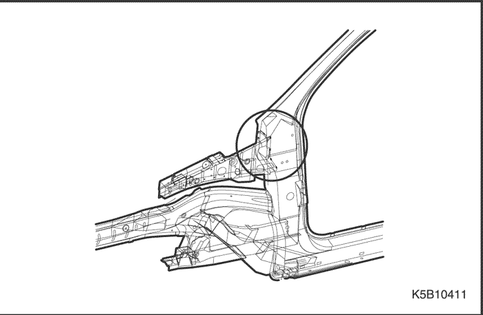
- Suelde el refuerzo del paso de rueda
- Suelde por puntos el refuerzo del paso de rueda como se muestra en la figura.
- Suelde con MIG o gas en las zonas de las bisagras de la puerta.
- Dele acabado a las zonas soldadas.
- Utilice un martillo y un tas para emparejar el paso de rueda trasera y las pestañas longitudinales para que ajusten bien en la superficie del paso de rueda delantera.
- Aplique el sellador.
- Aplique el sellador de cinta en la superficie que hace contacto con otros componentes y en la superficie de solape.
- Aplique la capa de imprimación.
- Aplique una capa de imprimación a la parte interior de los pasos de rueda delantera y trasera, y del larguero.
- Aplique la pintura.
- CUIDADO:
- Ventile bien el local cuando esté pintando. La mayoría de las pinturas contienen sustancias que resultan nocivas si se inhalan o ingieren. Lea detenidamente la etiqueta de la lata de pintura antes de abrirla.
- Evite el contacto con la piel. Cuando vaya a pintar, utilice máscara, guantes, gafas aprobadas para este trabajo, así como ropas adecuadas.
- La pintura es inflamable. Almacénela en un lugar seguro y manténgala alejada de chispas, llamas y cigarrillos.
- Aplicación de agentes anticorrosivos.
- Aplique una capa de agentes anticorrosivos hasta el extremo del lateral del panel delantero y las zonas de las bisagras de la puerta.
- Monte los componentes asociados.
- Cableado, panel de instrumentos y componentes asociados.
- Componentes del habitáculo.
- Componentes que se deben instalar cuando se vaya a montar el panel delantero.
- Otros.
- Móntelos en la misma secuencia en que los desmontó, pero en orden inverso.
Nota: Después de montar todos los componentes asociados, engrase los componentes móviles y rellene el depósito de refrigerante del motor, el del líquido de freno, el del gas del A/A y demás.
- Compruebe y ajuste
- Mida la alineación de las ruedas delanteras.
- Holguras y diferencias de nivel.
- Funcionamiento del mecanismo de cierre y apertura del capó.
- El reglaje de los faros.
- El funcionamiento de todos los otros componentes asociados.
- Si hay fugas de gas, aceite o líquido.
Nota: Utilice la hoja de comprobación que se especifica para la comprobación del funcionamiento.
LARGUERO DELANTERO
DESCRIPCIÓN GENERAL
El larguero longitudinal está unido al paso de rueda y al panel delantero, forma la base de la suspensión delantera, el motor, la transmisión y demás. Por consiguiente, la sustitución del componente repercute en la alineación de las ruedas delanteras y mantiene la rigidez de la parte delantera. Cuando vaya a montarlo, utilice una plantilla o ajústese a las dimensiones que aparecen en el gráfico de reparación de la carrocería, para colocarlo en su posición correcta. Debe soldarse con cuidado.
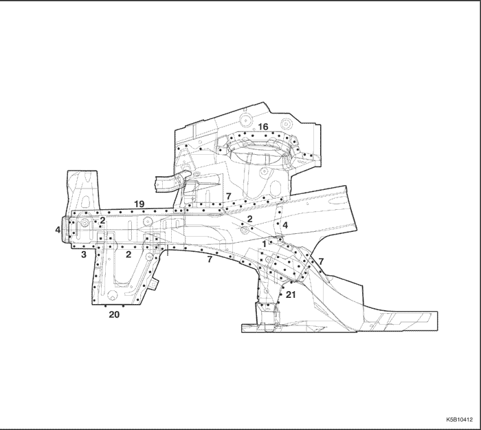
PROCEDIMIENTO DE REPARACIÓN
- Desmonte los componentes asociados.
- Componentes a desmontar cuando se vaya a desmontar el panel delantero y el paso de rueda delantera.
- Componentes ubicados en la parte inferior del salpicadero correspondiente al pasajero, que son especialmente inflamables.
- Panel de instrumentos, cableado, componentes asociados y otros.
Nota: Desmóntelos de acuerdo con el componente que haya resultado dañado.
- Desabolle y enderece la zona dañada hasta devolverle aproximadamente su forma original.
- Sujete bien el coche a la bancada apretando las abrazaderas de los bajos de la carrocería en los puntos de sujeción horizontal soldados.
- Antes de cortar las secciones dañadas, desabóllelas para devolverles su forma original.
- El cortar, sin precisión, el larguero delantero, según la magnitud del daño sufrido, antes de desabollarlo, dificulta la reparación de los componentes asociados.
- No desabolle más de lo necesario.
Nota: Compruebe el estado de la puerta y las bisagras.
- Quite la capa de imprimación y el sellador.
- Caliente la capa de imprimación y el sellador con un soplete de gas en las zonas soldadas del paso de rueda y del larguero, y levante la capa de imprimación y el sellador con una espátula de acero.
Precaución: Tenga cuidado de no quemar los accesorios ubicados dentro del habitáculo cuando esté aplicando calor.
- Corte y extraiga el larguero delantero.
Nota: No es necesario separar el paso de rueda del larguero delantero si se va a sustituir también el paso de rueda.
- Granetee la zona alrededor de los puntos de soldadura en el paso de rueda y otros componentes.
- Utilice la fresa especial cortapuntos para taladrar los puntos de soldadura en el centro de las zonas graneteadas.
- Corte el panel delantero con un cincel neumático, dejando intactas las pestañas para soldar.
- Rebaje y dele acabado a las rebabas de los puntos de soldadura con una lijadora de disco.
Precaución: Utilice gafas de protección abiertas o cerradas siempre que vaya a lijar, cortar o esmerilar para evitar lesiones en los ojos.
- Enderece los componentes asociados que se hayan abollado.
- Rellene con soldadura cualquier orificio que se haya hecho al quitar la soldadura por puntos.
Precaución: Para evitar lesiones en los ojos y quemaduras cuando esté soldando, utilice una careta para soldar, guantes y zapatos de seguridad homologados.
- Enderece el paso de rueda y los otros componentes asociados, y empareje las pestañas para soldar, con un martillo y un tas.
- Corte el nuevo larguero delantero para alinearlo con la carrocería, y ajuste luego el paso de rueda y el panel delantero.
- Corte el nuevo larguero delantero con una sierra de mano para soldarlo a tope.
- Lije ambos lados de la sección a soldar del larguero delantero y del paso de rueda, con una lijadora de disco, para quitarle la pintura y dejar expuesta la chapa de acero.
Precaución: Utilice gafas de protección abiertas o cerradas siempre que vaya a lijar, cortar o esmerilar para evitar lesiones en los ojos.
- Sujete firmemente el nuevo larguero delantero contra los otros componentes, sujetándolo con mordazas de presión y alicates autoblocantes.
- Coloque un gato debajo del extremo del larguero delantero y apóyelo, y mida las posiciones para lograr un ajuste correcto.
- Coloque el panel delantero y sujételo con mordazas de presión.
Nota: Se recomienda el uso de plantillas para colocar los componentes en su posición correcta y para verificar que tanto el larguero delantero como el paso de rueda queden paralelos uno con respecto al otro.
- Dele unos puntos de soldadura a las secciones sujetadas mediante mordazas de presión, para montarlas provisionalmente.
- Aplique la soldadura principal.
- Suelde lo más que pueda con la plantilla aún montada.
- Suelde con cuidado, con soldadura MIG o de gas, las uniones a tope del larguero delantero.
- Suelde por puntos el paso de rueda a las pestañas del larguero delantero y del panel delantero.
Precaución: Para evitar lesiones en los ojos y quemaduras cuando esté soldando, utilice una careta para soldar, guantes y zapatos de seguridad homologados.
- Haga primero una soldadura de prueba, y verifique la calidad de la misma.
- Aumente el número de puntos de soldadura en un 20 % en las zonas que vayan a ser soldadas por puntos.
- Rebaje los cordones de soldadura en la zona de unión a tope del larguero con una lijadora de disco.
- Haga un refuerzo de acuerdo con la forma de las zonas de unión a tope del larguero, y suelde este refuerzo en las zonas de unión a tope del larguero con soldadura MIG.
- Dele acabado a las zonas soldadas.
- Rebaje las soldaduras MIG o de gas, con una lijadora de disco.
- Utilice un martillo y un tas para enderezar el paso de rueda y las pestañas del larguero a fin de lograr un buen ajuste.
- Aplique el sellador.
- Aplique el sellador en las zonas de unión de la parte inferior del salpicadero y el panel del piso.
- Aplique la capa de imprimación.
- Aplique una capa de imprimación a las zonas de unión y solape de la parte delantera del piso, la parte inferior del larguero, y la parte interior del paso de rueda delantera y trasera.
- Aplique la pintura.
- CUIDADO:
- Ventile bien el local cuando esté pintando. La mayoría de las pinturas contienen sustancias que resultan nocivas si se inhalan o ingieren. Lea detenidamente la etiqueta de la lata de pintura antes de abrirla.
- Evite el contacto con la piel. Cuando vaya a pintar, utilice máscara, guantes y gafas homologadas para este trabajo, así como ropas adecuadas.
- La pintura es inflamable. Almacénela en un lugar seguro y manténgala alejada de chispas, llamas y cigarrillos.
- Aplicación de agentes anticorrosivos.
- Aplique una capa de agentes anticorrosivos hasta el extremo del lateral del panel delantero y las zonas de las bisagras de la puerta delantera.
- Monte los componentes asociados.
- Limpie el habitáculo.
- Cableado, panel de instrumentos y componentes asociados.
- Componentes del habitáculo.
- Componentes del chasis.
- Motor, radiador y componentes asociados.
- Condensador del A/A y componentes asociados.
- Faros y guardabarros.
- Capó, rejilla del radiador, y parachoques.
- Otros.
- Móntelos en la misma secuencia en que los desmontó, pero en orden inverso.
Nota: Después de montar todos los componentes asociados, engrase los componentes móviles y rellene el depósito de refrigerante del motor, el del líquido de freno, el del gas del A/A y demás.
- Compruebe y ajuste
- Holguras y diferencias de nivel.
- Funcionamiento del mecanismo de cierre y apertura del capó.
- El reglaje de los faros.
- El funcionamiento de todos los otros componentes asociados.
- Si hay fugas de gas, aceite o líquido.
- Si hay infiltraciones de agua en el habitáculo.
Nota: Utilice la hoja de comprobación que se especifica para la comprobación del funcionamiento.
BRAZO INFERIOR DE APOYO
DESCRIPCIÓN GENERAL
El brazo inferior de apoyo está unido al larguero delantero y al travesaño de la parte central inferior del salpicadero. Forma la base de la suspensión delantera y mantiene la rigidez de los componentes delanteros. Préstele especial atención a la posición y a las dimensiones de las uniones soldadas y suelde con cuidado.
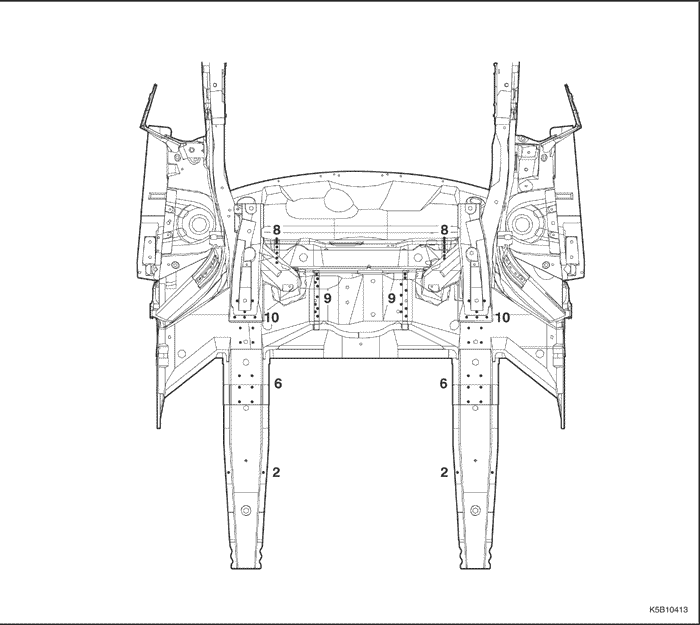
PROCEDIMIENTO DE REPARACIÓN
- Compruebe las zonas dañadas.
- Compruebe, adecuadamente, los componentes dañados y la magnitud del daño.
- El brazo inferior de apoyo recibe los impactos a través del larguero delantero. Generalmente, cuando se produce tal impacto es necesario sustituir todos estos componentes.
- Desmonte los componentes asociados.
- Asientos delanteros.
- Guarnecidos y alfombra.
- Cableado y otros.
- Componentes a desmontar cuando se vaya a desmontar el larguero delantero.
Nota: Desmóntelos de acuerdo con el componente que haya resultado dañado.
- Desabolle y enderece la zona dañada hasta llevarla aproximadamente a su forma original.
Nota: Utilice el forro de protección termo-resistente para proteger las zonas pintadas, los asientos, moquetas y otros componentes.
- Antes de cortar los componentes dañados, ponga el coche sobre la bancada, y desabolle los componentes asociados tales como el travesaño del panel del piso delantero y el propio panel del piso delantero.
- No desabolle más de lo necesario.
- Compruebe las holguras y las diferencias de nivel de las puertas delanteras.
- Levante la carrocería con un gato, y coloque polines de seguridad en los cuatro puntos del vano de puertas del bastidor, destinados a tal efecto. Si fuera necesario, coloque polines de seguridad en la parte trasera del bastidor.
- Quite la capa de imprimación, el sellador y el material insonorizante.
- Aplique calor a la capa de imprimación y al sellador en las zonas de la soldadura del larguero, al travesaño del panel del piso delantero y al panel del piso delantero, con un soplete de gas, y levante la capa de imprimación y el sellador con una espátula de acero.
- Retire el material insonorizante de la superficie del piso delantero.
Precaución: Tenga cuidado de no quemar los accesorios ubicados en el interior del habitáculo cuando esté aplicando calor.
- Corte y extraiga el brazo inferior de apoyo.
- Granetee la zona alrededor de los puntos de soldadura en el brazo inferior de apoyo.
- Utilice una fresa especial cortapuntos para taladrar los puntos de soldadura en las zonas graneteadas.
Nota: Cuando esté taladrando, tenga cuidado de no perforar el travesaño del panel delantero del piso ni ningún otro componente
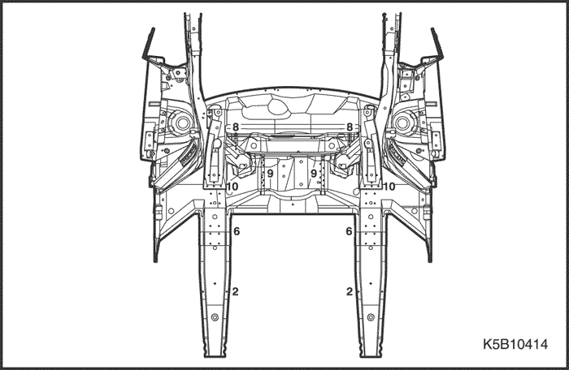
- Corte y extraiga el brazo inferior de apoyo, con un cincel neumático, dejando intactas las pestañas para soldar.
- Rebaje y dele acabado a las rebabas de los taladros hechos y de los puntos de soldadura que se quitaron, con una lijadora de disco.
Precaución: Utilice gafas de protección abiertas o cerradas siempre que vaya a lijar, cortar o esmerilar para evitar lesiones en los ojos.
Nota: Compruebe nuevamente la magnitud del daño y de la grieta.
- Enderece los componentes asociados que se hayan abollado.
- Enderece la parte inferior del panel del salpicadero, el travesaño del panel del piso delantero y otros componentes asociados, con martillo y tas.
- Empareje las soldaduras, con martillo y tas.
- Rellene con soldadura cualquier orificio que se haya hecho al quitar la soldadura por puntos.
- Coloque el nuevo brazo inferior de apoyo.
- Coloque previamente el nuevo brazo inferior de apoyo en su posición y marque la posición de la soldadura para luego hacer una soldadura MIG de botón.
- Incremente en un 20 % la cantidad de botones de soldadura.
- Perfore taladros en la posición marcada, con una broca de 5 mm para luego hacer la soldadura de botón con MIG.
- Lije, con una lijadora de disco, ambos lados de la sección a soldar del brazo de control y apoyo y las superficies de los componentes asociados que estén en contacto con el primero, para quitarle la pintura y dejar expuesta la chapa de acero.
Precaución: Utilice gafas de protección abiertas o cerradas siempre que vaya a lijar, cortar o esmerilar para evitar lesiones en los ojos.
- Coloque el brazo inferior de apoyo en su posición utilizando un gato, y sujételo en esa posición mediante mordazas de presión.
Nota: Se recomienda la utilización de plantillas para colocarlo en su posición correcta.
- Compruebe la holgura y enderece las pestañas con martillo y tas.
- Aplique la soldadura principal.
- Suelde con botones los taladros del brazo inferior de apoyo, con una soldadora MIG.
Precaución: Para evitar lesiones en los ojos y quemaduras cuando esté soldando, utilice una careta para soldar, guantes y zapatos de seguridad homologados.
- Dele acabado a las zonas soldadas.
- Rebaje las soldaduras con una lijadora de disco.
- Aplique el sellador.
- Aplique el sellador en la parte interior de las zonas de unión del habitáculo.
- Aplique la capa de imprimación.
- Aplique una capa de imprimación a la superficie del piso delantero, al travesaño del piso delantero, al brazo inferior de apoyo y a otros componentes asociados.
- Aplique la pintura.
- CUIDADO:
- Ventile bien el local cuando esté pintando. La mayoría de las pinturas contienen sustancias que resultan nocivas si se inhalan o ingieren. Lea detenidamente la etiqueta de la lata de pintura antes de abrirla.
- Evite el contacto con la piel. Cuando vaya a pintar, utilice máscara, guantes y gafas homologadas para este trabajo, así como ropas adecuadas.
- La pintura es inflamable. Almacénela en un lugar seguro y manténgala alejada de chispas, llamas y cigarrillos.
- Aplique el material insonorizante.
- Limpie el habitáculo.
- Aplique el material insonorizante a la superficie del panel del suelo.
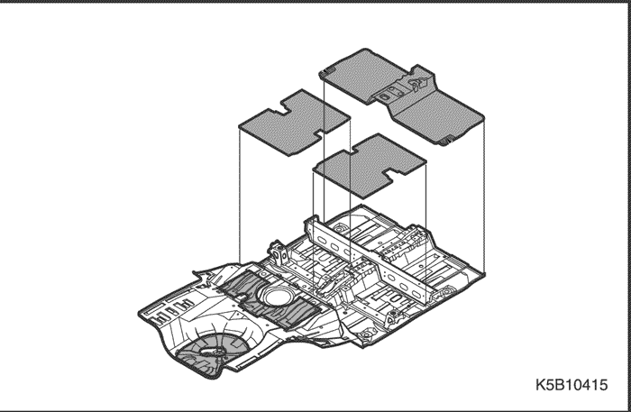
- Monte los componentes asociados.
- Limpie el habitáculo.
- Cableado y componentes asociados.
- Componentes del habitáculo.
- Componentes del chasis.
- Componentes del compartimento delantero.
- Capó, rejilla del radiador y parachoques.
- Otros.
- Móntelos en la misma secuencia en que los desmontó, pero en orden inverso.
Nota: Después de montar todos los componentes asociados, engrase los componentes móviles y rellene el depósito de refrigerante del motor, el del líquido de freno, el del gas del A/A y demás.
- Compruebe y ajuste
- Mida la alineación de las ruedas delanteras.
- Holguras y diferencias de nivel.
- Funcionamiento del mecanismo de cierre y apertura del capó.
- El reglaje de los faros.
- El funcionamiento de todos los otros componentes asociados.
- Si hay fugas de gas, aceite o líquido.
- Si hay infiltraciones de agua en el habitáculo.
Nota: Utilice la hoja de comprobación que se especifica para la comprobación del funcionamiento.
MONTANTE DELANTERO
DESCRIPCIÓN GENERAL
La zona del montante delantero forma parte del panel de la abertura de la puerta del bastidor. Está conectada al techo, al parabrisas, a las bisagras de la puerta y al bastidor del piso y juega un papel importante como apoyo de la parte delantera de la cabina. La conexión del montante delantero determina la posición del parabrisas y de la puerta delantera. Alinee el parachoques, la puerta y el parabrisas mientras el montante delantero esté montado de forma provisional, y verifique las holguras y las diferencias de nivel.
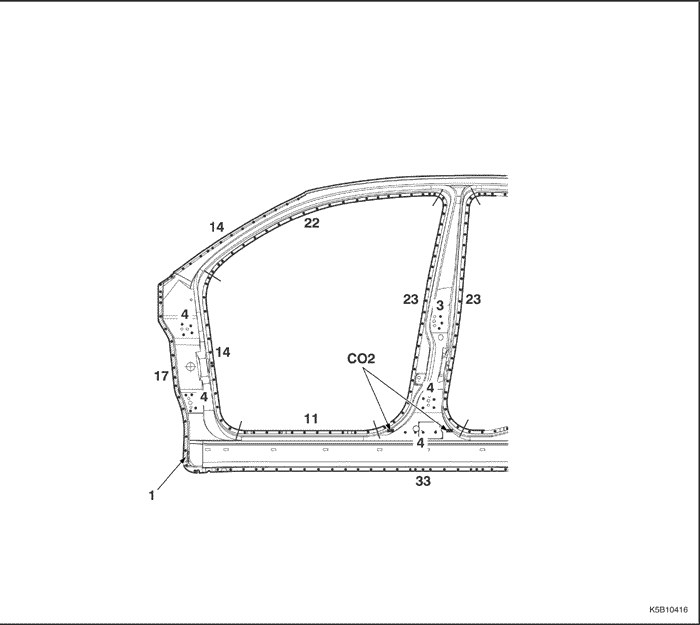
- Sellador de soldadura por puntos
PROCEDIMIENTO DE REPARACIÓN
- Desmonte los componentes asociados.
- Capó, rejilla del radiador y parachoques delantero.
- Puerta y parachoques.
- Limpiaparabrisas, travesaño inferior del parabrisas y parabrisas.
- Burlete y guarnecido del montante.
- Panel de instrumentos y cableado.
- Alfombra y otros.
- Desabolle y enderece la zona dañada.
- Verifique el daño que haya sufrido el paso de rueda y el techo antes de desmontar el refuerzo del paso de rueda y el montante delantero y determine la magnitud de los daños.
- Coloque el coche en una bancada para desabollar y reparar el montante delantero dañado, antes de desmontar el refuerzo del paso de rueda y el panel delantero.
Nota: Desabolle hasta que el montante quede alineado con la superficie del parabrisas y no tire hacia afuera más de lo necesario.
- Desmonte el refuerzo del paso de ruedas.
- Granetee la zona alrededor de los puntos de soldadura.
- Utilice la fresa especial cortapuntos para taladrar los puntos de soldadura del refuerzo del paso de rueda.
- Lije la soldadura MIG, con una lijadora de disco.
Precaución: Utilice gafas de protección abiertas o cerradas siempre que vaya a lijar, cortar o esmerilar para evitar lesiones en los ojos.
- Utilizando un cortafrío, separe la pestaña soldada del montante delantero de la carrocería y del paso de rueda delantera.
- Quite la capa de imprimación y el sellador.
- Caliente la capa de imprimación y el sellador, con un soplete de gas, en las zonas soldadas del paso de rueda y del larguero, y levante la capa de imprimación y el sellador con una espátula de acero.
- Corte y extraiga el montante delantero.
- Corte con cuidado, con una sierra de mano y una tijera de chapista, el montante delantero, a lo largo de las líneas resaltadas en negrita como se muestra en la figura que aparece a continuación.
Nota: Tenga cuidado de no cortar la sección interior.
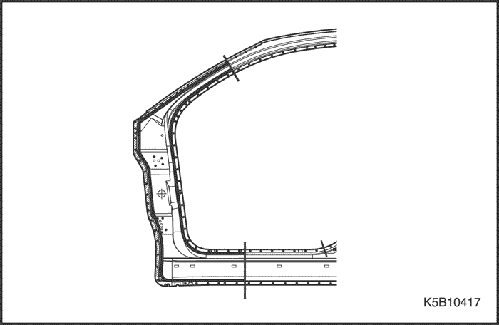
- Granetee la zona alrededor de los puntos de soldadura del paso de rueda trasera, la parte interior del montante delantero de la carrocería, la parte interior del refuerzo del montante delantero de la carrocería y el lateral del panel del piso.
- Utilice la fresa especial cortapuntos para taladrar los puntos de soldadura del montante delantero.
Nota: Al taladrar, tenga cuidado de no perforar la parte interior del montante delantero de la carrocería, la parte interior del refuerzo del montante delantero de la carrocería ni el lateral del panel del piso.
- Separe de la carrocería, con un cincel neumático, los restos de las pestañas cortadas, dejando intactas las pestañas para soldar.
- Rebaje y dele acabado a las rebabas de los puntos de soldadura, utilizando martillo, tas y lijadora de disco.
Precaución: Utilice gafas de protección abiertas o cerradas siempre que vaya a lijar, cortar o esmerilar para evitar lesiones en los ojos.
- Enderece los componentes asociados que se hayan abollado.
- Rellene con soldadura cualquier orificio que se haya hecho al quitar la soldadura por puntos.
Precaución: Para evitar lesiones en los ojos y quemaduras cuando esté soldando, utilice una careta para soldar, guantes y zapatos de seguridad homologados.
- Utilice un martillo y un tas para enderezar las zonas abolladas de la sección del panel interior antiguo que se va a seguir utilizando y enderece las pestañas para soldar.
- Coloque el nuevo montante delantero.
- Alinee el componente nuevo con la sección superior y córtelo con una sierra de mano.
- Corte, con una sierra de mano, la zona de unión del lateral del panel del piso de forma que quede un solape de 30 mm (1,18 pulg.) (1) en el lateral del panel del piso.
- Lije ambas caras de la sección a soldar con una lijadora de disco para quitarle la pintura y dejar al descubierto la chapa de acero.
- Sujete el panel nuevo en su posición, con mordazas de presión.
- Dele unos puntos de soldadura a las secciones sujetadas mediante mordazas de presión, para montarlas provisionalmente.
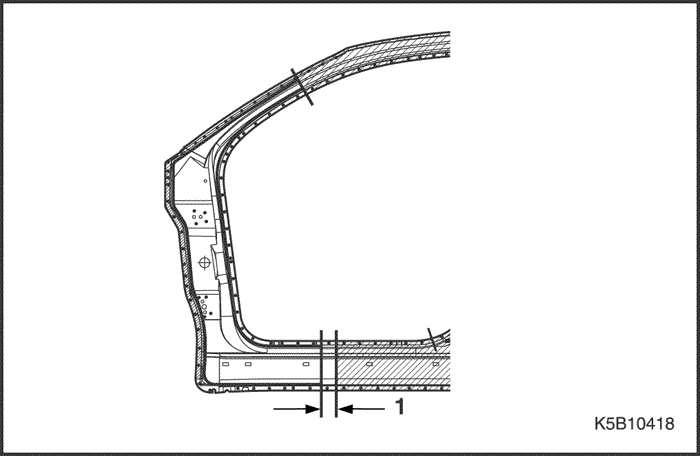
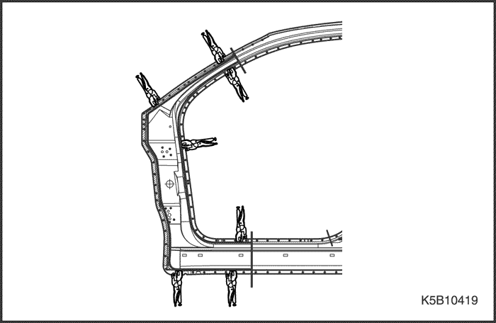
Precaución: Para evitar lesiones en los ojos y quemaduras cuando esté soldando, utilice una careta para soldar, guantes y zapatos de seguridad homologados.
- Desmonte las mordazas de presión y monte provisionalmente el guardabarros y las puertas, y compruebe entonces las holguras, diferencias de nivel y la apariencia externa.
- Aplique la soldadura principal.
- Suelde la zona del vano de puertas del bastidor y el montante en las uniones a tope, con un soldador MIG o de gas.
- Suelde por puntos las pestañas del montante delantero como se muestra en la figura.
Precaución: Para evitar lesiones en los ojos y quemaduras cuando esté soldando, utilice una careta para soldar, guantes y zapatos de seguridad homologados.
- Haga primero una soldadura de prueba, y verifique la calidad de la misma.
- Aumente el número de puntos de soldadura en un 20 % en las zonas que vayan a ser soldadas por puntos.
- Dele acabado a las zonas soldadas.
- Rebaje las zonas soldadas con soldadura de gas o MIG, con una lijadora de disco, y luego empareje los puntos altos con un martillo, teniendo cuidado de no deformarlos.
Precaución: Utilice gafas de protección abiertas o cerradas siempre que vaya a lijar, cortar o esmerilar para evitar lesiones en los ojos.
- Utilice un martillo y un tas para emparejar las pestañas soldadas por puntos a fin de lograr un buen ajuste en la superficie del panel interior.
- Rellene las deformaciones y desniveles de las zonas soldadas, con soldadura de estaño o masilla, y luego deles acabado.
- Aplique el sellador de cinta.
- Aplique el sellador de cinta en la zona que está en contacto con el refuerzo del paso de rueda y las bisagras, como se muestra en la figura.
- Suelde el refuerzo del paso de rueda
- Suelde por puntos el refuerzo del paso de rueda como se muestra en la figura.
- Suelde con MIG o gas en las zonas de las bisagras de la puerta.
- Dele acabado a las zonas soldadas.
- Utilice un martillo y un tas para emparejar el refuerzo del paso de ruedas a fin de lograr un buen ajuste en la superficie del paso de rueda.
- Aplique el sellador.
- Aplique el sellador de cinta en la superficie que hace contacto con otros componentes y en la superficie de solape.
- Aplique la capa de imprimación.
- Aplique una capa de imprimación a la parte interior de los pasos de rueda delantera y trasera, y del larguero.
- Aplique la pintura.
- CUIDADO:
- Ventile bien el local cuando esté pintando. La mayoría de las pinturas contienen sustancias que resultan nocivas si se inhalan o ingieren. Lea detenidamente la etiqueta de la lata de pintura antes de abrirla.
- Evite el contacto con la piel. Cuando vaya a pintar, utilice máscara, guantes y gafas homologadas para este trabajo, así como ropas adecuadas.
- La pintura es inflamable. Almacénela en un lugar seguro y manténgala alejada de chispas, llamas y cigarrillos.
- Aplicación de agentes anticorrosivos.
- Aplique una capa de agentes anticorrosivos hasta el extremo del lateral del panel delantero y las zonas de las bisagras de la puerta.
- Monte los componentes asociados.
- Limpie el habitáculo.
- Parabrisas, travesaño inferior del parabrisas y limpiaparabrisas.
- Cableado, panel de instrumentos y componentes asociados.
- Alfombra, guarnecidos y burlete.
- Puerta
- Guardabarros y capó.
- Rejilla del radiador, parachoques y otros.
- Móntelos en la misma secuencia en que los desmontó, pero en orden inverso.
- Compruebe y ajuste:
- La puerta para verificar si está bien montada y si funciona bien.
- Holguras y diferencias de nivel.
- Funcionamiento del mecanismo de cierre y apertura del capó.
- El funcionamiento de todos los otros componentes asociados.
- Si hay infiltraciones de agua en el habitáculo.
Nota: Utilice la hoja de comprobación que se especifica para la comprobación del funcionamiento.